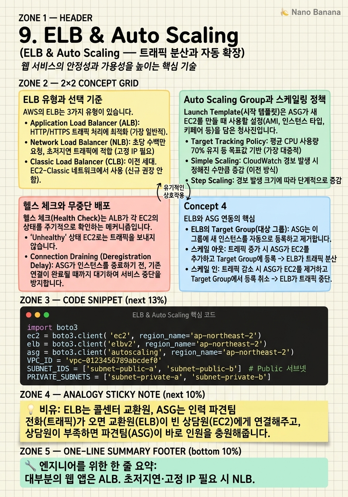

ELB & Auto Scaling

🎯 학습 목표
- ALB를 생성하고 Target Group에 EC2를 등록할 수 있다
- Auto Scaling Group을 Launch Template과 함께 구성할 수 있다
- CPU 기반 스케일링 정책을 설정할 수 있다
- 헬스 체크 실패 시 자동으로 인스턴스가 교체되는 원리를 이해한다
- Blue/Green 배포 전략을 ELB와 Auto Scaling으로 구현하는 개념을 이해한다
단일 EC2 인스턴스는 두 가지 근본적인 한계가 있습니다. 첫째, 트래픽이 몰리면 혼자 처리할 수 없습니다. 둘째, 그 서버 하나가 고장나면 서비스 전체가 중단됩니다. 이 두 문제를 동시에 해결하는 것이 로드 밸런서 + Auto Scaling 조합입니다.
ELB(Elastic Load Balancer)는 외부에서 들어오는 트래픽을 여러 EC2 인스턴스에 고르게 분산합니다. 사용자는 하나의 도메인(또는 IP)으로 접속하지만, 실제로는 뒤에 있는 여러 서버 중 하나에 연결됩니다. 하나의 서버가 고장나면 로드 밸런서가 자동으로 그 서버를 제외하고 나머지 서버로만 트래픽을 보냅니다.
Auto Scaling Group(ASG)은 CPU 사용률·요청 수·커스텀 메트릭을 기반으로 EC2 인스턴스의 수를 자동으로 조절합니다. 점심 시간에 주문이 몰리면 서버를 10개로 늘리고, 새벽 2시에 트래픽이 없으면 서버를 2개로 줄입니다. 이로 인해 비용 효율성과 성능을 동시에 달성할 수 있습니다.
핵심 내용
ELB 유형과 선택 기준
AWS의 ELB는 3가지 유형이 있습니다.
ALB(Application Load Balancer) — HTTP/HTTPS 레이어 7 로드 밸런서. 가장 많이 사용됩니다.
- URL 경로 기반 라우팅: /api/* → 백엔드 서버, /static/* → S3
- 호스트 기반 라우팅: api.example.com vs app.example.com
- 헤더·쿼리 파라미터 기반 라우팅
- WebSocket, HTTP/2 지원
- Target: EC2, Lambda, IP, ECS Task
NLB(Network Load Balancer) — TCP/UDP 레이어 4 로드 밸런서.
- 초저지연 (마이크로초 단위), 고처리량 - 고정 IP 주소 지원 (ALB는 IP가 변동) - 게임 서버·IoT·실시간 거래 시스템에 적합
GLB(Gateway Load Balancer) — 방화벽·IDS/IPS 같은 가상 네트워크 어플라이언스 앞에 배치. 보안 솔루션 업체가 주로 사용.
대부분의 웹 앱에는 ALB를 선택합니다. NLB는 고정 IP나 초저지연이 꼭 필요할 때만 사용합니다.
Target Group은 ALB가 트래픽을 보내는 대상(EC2·Lambda·ECS 등)의 논리적 묶음입니다. ALB 리스너 규칙에서 경로에 따라 다른 Target Group으로 라우팅할 수 있습니다.
Auto Scaling Group과 스케일링 정책
Launch Template(시작 템플릿)은 ASG가 새 EC2를 만들 때 사용할 설정(AMI, 인스턴스 타입, 키페어, 보안 그룹, User Data)을 정의합니다. 예전의 Launch Configuration 대신 Launch Template을 사용해야 합니다 (더 많은 기능 지원).
ASG 스케일링 정책 유형:
1. Target Tracking (대상 추적) — 추천 - 특정 메트릭을 목표값으로 유지 - 예: 'CPU 사용률을 50%로 유지' → AWS가 자동으로 인스턴스 수 조절
2. Step Scaling (단계 조정) - CPU 60% → 2개 추가, CPU 80% → 5개 추가처럼 단계별 설정
3. Scheduled Scaling (예약 스케일링) - 매일 오전 9시 인스턴스 10개로 확장, 오후 6시 2개로 축소 - 트래픽 패턴이 예측 가능할 때 사용
스케일인(Scale-in) 보호: 특정 인스턴스가 삭제되지 않도록 보호하는 기능. 실행 중인 중요 작업이 있는 인스턴스를 실수로 삭제하는 것을 방지합니다.
Warm Pool: 미리 프로비저닝된 정지 상태의 인스턴스 풀. 갑작스런 트래픽 증가 시 콜드 스타트 없이 빠르게 확장 가능합니다.
헬스 체크와 무중단 배포
헬스 체크(Health Check)는 ALB가 각 EC2의 상태를 주기적으로 확인하는 메커니즘입니다. 지정한 경로(예: /health)에 HTTP 요청을 보내 200 응답을 받으면 정상, 실패하면 해당 인스턴스를 로드 밸런싱 대상에서 제외합니다.
ASG는 ELB 헬스 체크 결과를 사용해 자동 복구(Auto Recovery)를 수행합니다. 인스턴스가 비정상이면 ASG가 자동으로 새 인스턴스를 시작하고 비정상 인스턴스를 교체합니다.
무중단 배포 전략:
| 전략 | 방식 | 장점 | 단점 |
|---|---|---|---|
| Rolling Update | 한 번에 일부만 교체 | 무중단 | 혼합 버전 존재 기간 |
| Blue/Green | 새 환경 준비 후 트래픽 전환 | 즉시 롤백 가능 | 2배 인프라 비용 |
| Canary | 일부 트래픽(1~5%)을 새 버전으로 | 점진적 검증 | 복잡한 모니터링 |
Blue/Green 배포 with ELB: 1. 현재 버전(Blue) ASG가 트래픽을 처리 중 2. 새 버전(Green) ASG를 준비 3. ALB에서 Target Group을 Green으로 전환 4. 문제 없으면 Blue 삭제, 문제 있으면 즉시 Blue로 되돌림
💡 비유로 이해하기
ELB + Auto Scaling을 이해하는 가장 직관적인 비유는 콜센터 교환원(ELB)과 인력 파견팀(ASG)입니다.
콜이 많이 올 때 교환원(ELB)은 여러 상담원(EC2 인스턴스)에게 고르게 연결합니다. 상담원 한 명이 아파서 결근하면(인스턴스 장애) 교환원은 그 상담원으로는 연결하지 않습니다. 손님은 누가 받는지 모르고 그냥 빠르게 연결될 뿐입니다.
인력 파견팀(ASG)은 콜 수(트래픽)를 보고 있다가 상담원이 너무 바쁘면 (CPU 80% 이상) 추가 인력을 투입합니다. 콜이 줄어들면 여분 인력을 철수시킵니다. 덕분에 콜센터는 항상 적절한 수의 상담원만 유지하면서 비용을 절약하고, 폭주에도 대응할 수 있습니다.
💻 코드 예시
boto3로 ALB, Target Group, Auto Scaling Group을 생성하는 예제입니다. 실제 환경에서는 VPC와 서브넷, AMI가 미리 준비되어 있어야 합니다.
import boto3
ec2 = boto3.client('ec2', region_name='ap-northeast-2')
elb = boto3.client('elbv2', region_name='ap-northeast-2')
asg = boto3.client('autoscaling', region_name='ap-northeast-2')
VPC_ID = 'vpc-0123456789abcdef0'
SUBNET_IDS = ['subnet-public-a', 'subnet-public-b'] # Public 서브넷
PRIVATE_SUBNETS = ['subnet-private-a', 'subnet-private-b']
# 1. Application Load Balancer 생성
lb = elb.create_load_balancer(
Name='my-alb',
Subnets=SUBNET_IDS, # Public 서브넷에 배치
SecurityGroups=['sg-alb-xxx'],
Scheme='internet-facing', # 인터넷 노출
Type='application',
IpAddressType='ipv4'
)['LoadBalancers'][0]
lb_arn = lb['LoadBalancerArn']
print(f"✅ ALB: {lb['DNSName']}")
# 2. Target Group 생성 (EC2 인스턴스 묶음)
tg = elb.create_target_group(
Name='my-tg',
Protocol='HTTP',
Port=80,
VpcId=VPC_ID,
HealthCheckPath='/health', # 헬스 체크 경로
HealthCheckIntervalSeconds=30,
HealthyThresholdCount=2,
UnhealthyThresholdCount=3
)['TargetGroups'][0]
tg_arn = tg['TargetGroupArn']
# 3. ALB 리스너: 포트 80 → Target Group
elb.create_listener(
LoadBalancerArn=lb_arn,
Protocol='HTTP',
Port=80,
DefaultActions=[{'Type': 'forward', 'TargetGroupArn': tg_arn}]
)
# 4. Launch Template 생성
lc = ec2.create_launch_template(
LaunchTemplateName='my-lt',
LaunchTemplateData={
'ImageId': 'ami-0c9c942bd7bf113a2',
'InstanceType': 't3.micro',
'SecurityGroupIds': ['sg-ec2-xxx'],
'UserData': 'IyEvYmluL2Jhc2gKc3VkbyB5dW0gaW5zdGFsbCAteSBuZ2lueA=='
}
)
# 5. Auto Scaling Group 생성
asg.create_auto_scaling_group(
AutoScalingGroupName='my-asg',
LaunchTemplate={'LaunchTemplateName': 'my-lt', 'Version': '$Latest'},
MinSize=2, MaxSize=10, DesiredCapacity=2,
TargetGroupARNs=[tg_arn], # ALB Target Group 연결
VPCZoneIdentifier=','.join(PRIVATE_SUBNETS), # Private 서브넷
HealthCheckType='ELB', # ALB 헬스 체크 사용
HealthCheckGracePeriod=300 # 시작 후 5분은 헬스 체크 유예
)
print("✅ Auto Scaling Group 설정 완료")HealthCheckType='ELB'를 설정하면 ASG가 EC2 자체 상태가 아닌 ALB 헬스 체크를 기준으로 인스턴스 교체를 결정합니다. HealthCheckGracePeriod=300은 새 인스턴스가 시작된 직후 5분간 헬스 체크를 무시합니다 (앱 시작 시간 확보). EC2는 Private Subnet에 배치하고 ALB만 Public Subnet에 두는 것이 보안 모범 사례입니다.
🏭 현업에서의 평가
✅ 시니어가 보는 것
- 스케일링 정책을 메트릭과 비즈니스 요구에 맞게 적절히 선택하는가
- 배포 전략(Blue/Green, Rolling, Canary)의 트레이드오프를 이해하는가
- ALB와 ASG의 헬스 체크를 통해 자동 복구를 설계하는가
⚠️ 레드 플래그
- ASG 없이 고정된 수의 EC2만 사용해 트래픽 폭증에 대비하지 않음
- 모든 상황에 Blue/Green을 선택해 비용 효율성을 고려하지 않음
- Min/Max/Desired를 모두 같은 값으로 설정해 Auto Scaling이 동작하지 않음
🎤 예상 인터뷰 질문
- 트래픽이 갑자기 10배 증가했을 때 ASG가 새 EC2를 띄우는 데 걸리는 시간을 줄이려면?
- Sticky Session(세션 고정)이 필요한 상황에서 ALB를 어떻게 설정하겠습니까?
- ALB Access Log를 S3에 저장하고 Athena로 분석하는 아키텍처를 설명해 주세요.
✨ 핵심 요약
ALB = 레이어 7, NLB = 레이어 4
대부분의 웹 앱은 ALB. 초저지연·고정 IP 필요 시 NLB.
Target Group이 핵심 단위
ALB는 Target Group으로 트래픽을 보낸다. URL별 다른 TG 가능.
Min/Max/Desired 구분
Min: 최소 유지, Max: 최대 허용, Desired: 현재 목표 수.
Target Tracking 정책 추천
'CPU 50% 유지'처럼 목표 지표를 지정하면 AWS가 자동 조절.
헬스 체크 경로 구현 필수
앱 서버에 /health 엔드포인트를 반드시 구현해야 함.
EC2는 Private Subnet에
ALB만 Public으로 노출. EC2는 직접 접근 차단.
Warm Pool로 빠른 확장
예열된 인스턴스 풀로 콜드 스타트 없이 즉시 확장.
Blue/Green으로 무중단 배포
새 버전을 준비 후 ALB 트래픽 전환으로 즉시 롤백 가능.